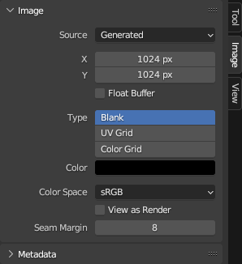
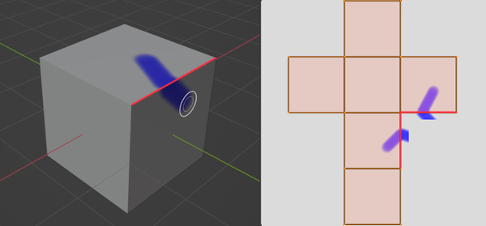

Cài đặt Hình ảnh¶

Tab Image.¶
Source¶
Chọn loại hình ảnh sẽ dùng. Với các hình ảnh đến từ file, xem Các Định Dạng Hình Ảnh Được Hỗ Trợ.
Single Image¶
Một hình ảnh tĩnh, đơn lẻ.
Image Sequence¶
Một animation trong đó mỗi frame được lưu trong một file riêng. Xem Mở một Chuỗi Hình Ảnh. Về các tùy chọn, xem Movie bên dưới.
Movie¶
Một file video. Lưu ý rằng nếu bạn muốn thực hiện motion tracking và compositing video thay vì đơn thuần dùng video làm texture, bạn nên tải nó vào Movie Clip Editor.
Ghi chú
Các tùy chọn dưới đây chỉ nhằm mục đích xem trước; chúng không ảnh hưởng đến 3D Viewport hay bản render. Về vấn đề đó, hãy xem Node Image Texture.
Ghi chú
Blender phát mọi video theo frame rate của scene, chứ không theo frame rate gốc của chúng, nghĩa là video sẽ nhanh hơn hoặc chậm hơn dự kiến nếu hai frame rate này không khớp nhau. Để khắc phục điều này, hãy xem trường Offset của Image Texture Node được liên kết ở trên.
- Frames
Số frame của video sẽ phát. Sau điểm này, video sẽ bị tạm dừng (trừ khi Cyclic được bật).
- Match Movie Length
Đặt Frames bằng số frame có trong file video.
- Start
Frame của scene mà video sẽ bắt đầu phát.
- Offset
Số frame dùng để dịch chuyển video về một thời điểm sớm hơn. (Nói cách khác: bỏ qua bao nhiêu frame ở đầu video.)
- Cyclic
Bắt đầu lại sau frame cuối để tạo vòng lặp liên tục.
- Auto Refresh
Phát video trong Image Editor khi animation của scene đang phát. (Con trỏ chuột phải nằm trong Image Editor hoặc Timeline khi bắt đầu phát thì tính năng này mới hoạt động.)
- Deinterlace
Áp dụng deinterlace cho video giao thoa (analog).
Generated¶
Hình ảnh được tạo bởi Blender.
- X, Y
Chiều rộng và chiều cao của hình ảnh tính bằng pixel.
- Float Buffer
Tạo hình ảnh 32-bit. Loại này có dung lượng file lớn hơn, nhưng chứa nhiều thông tin màu hơn hẳn hình ảnh 8-bit tiêu chuẩn. Đối với cận cảnh và gradient lớn, dùng hình ảnh 32-bit có thể là lựa chọn tốt hơn.
- Type
- Blank:
Tạo một hình ảnh trống với một màu duy nhất được chỉ định.
- UV Grid:
Tạo một họa tiết bàn cờ với dấu cộng (+) màu trong mỗi ô vuông.
- Color Grid:
Tạo một lưới màu phức tạp hơn với các chữ cái và chữ số chỉ vị trí. Nó có thể được dùng để kiểm tra độ kéo giãn hay biến dạng trong UV mapping.
- Color
Màu tô khi tạo hình ảnh Blank.
Common Options¶
- File
Dùng để thay thế hoặc pack file.
- Pack
Nhúng tài nguyên vào blend-file hiện tại. Xem Dữ liệu Đóng gói (Packed).
- Path
Đường dẫn đến file được liên kết.
- Open
Mở File Browser để chọn một file từ ổ đĩa.
- Reload
Tải lại file. Hữu ích khi file đã được chỉnh sửa trong một ứng dụng bên ngoài.
- Use Multi-View
Xem Multi-View.
- Color Space
Chỉ định Color Space mà file hình ảnh đã được lưu theo. Thông tin này được dùng để chuyển đổi hình ảnh chính xác sang color space tuyến tính nội bộ của Blender, vốn được dùng cho mọi phép tính màu sắc và việc render.
Texture và bản render cuối thường được lưu ở sRGB, trong khi các ảnh OpenEXR được lưu trong color space tuyến tính. Một số hình ảnh như normal map, bump map hay stencil map không thực sự chứa "màu sắc" và không bao giờ nên được áp chuyển đổi màu. Với những hình ảnh như vậy, color space nên được đặt thành Non-Color.
Danh sách các color space phụ thuộc vào OCIO config đang hoạt động. Các color space được hỗ trợ mặc định được mô tả chi tiết tại đây: Default OpenColorIO Configuration.
- Alpha
Cách hình ảnh sử dụng Alpha Channel của nó. Tùy chọn này chỉ khả dụng nếu định dạng hình ảnh hỗ trợ độ trong suốt.
- Straight:
Lưu các kênh RGB và alpha riêng biệt với alpha đóng vai trò như một mask, còn gọi là unassociated alpha. Thường được dùng bởi các ứng dụng chỉnh sửa hình ảnh và các định dạng file như PNG. Cách này giữ được màu ở những phần hình ảnh có alpha bằng 0.
- Premultiplied:
Lưu các kênh RGB với alpha đã được nhân vào, còn gọi là associated alpha. Đây là định dạng tự nhiên cho các bản render và được dùng bởi các định dạng file như OpenEXR. Khác với straight alpha, cách này có thể biểu diễn chính xác các hiệu ứng phát sáng thuần như lửa.
- Channel Packed:
Các hình ảnh khác nhau được đóng gói vào các kênh RGB và alpha, và chúng không nên ảnh hưởng lẫn nhau. Việc đóng gói kênh thường được các game engine dùng để tiết kiệm bộ nhớ.
- None:
Bỏ qua kênh alpha từ file và khiến hình ảnh hoàn toàn đục.
- Half Float Precision Workbench EEVEE
Tải hình ảnh với bit depth chỉ 16 bit trên mỗi kênh thay vì 32 bit, giúp tiết kiệm bộ nhớ.
- View as Render
Áp dụng các cài đặt color management khi hiển thị hình ảnh này trên màn hình.
- Seam Margin
Độ dày của phần biên quanh các UV island để texture painting loang vào. Phần biên này đảm bảo không còn pixel nào chưa được tô ở rìa island.

Vẽ một nét vượt qua đường seam trong không gian 3D sẽ khiến nét vắt qua rìa UV island trong texture, cho đến khi bị cắt tại phần biên.¶
Giá trị cao hơn sẽ tạo phần biên dày hơn, điều này có thể hữu ích nếu bạn định tạo mipmap cho texture. Tuy vậy, nó cũng có thể làm giảm hiệu năng vẽ.
Ghi chú
Cài đặt này chỉ ảnh hưởng đến Sculpt Mode, nơi hỗ trợ texture painting hiện vẫn đang ở giai đoạn thử nghiệm. Trong Texture Paint Mode, một phần biên cố định được dùng thay thế.